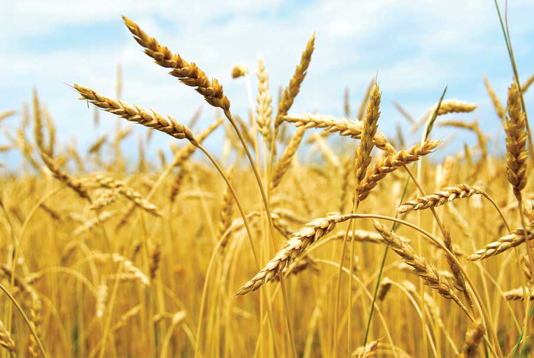

“Having lost sight of our goals, we redouble our efforts.” - Mark Twain
In a recent magazine advertisement, Monsanto - one of the world’s largest agribusinesses and a purveyor of genetic engineering and agro-chemicals - has appointed itself a representative of “sustainable agriculture.”
In a certain context, they have a point.
Monsanto argues in its advertising campaign that we’ll need to double agricultural production by 2050 to feed 9 billion people in a world afflicted by climate change. The so-called “green revolution” of industrial agricultural that began in the late 1950s allowed us to exploit fossil fuel resources to sustain unprecedented rates of population growth. Therefore, Monsanto suggests, we’ll need more and better technology to survive our continuing growth.
At best, this strategy might carry us through the next 40 years or so. But then what?
“Sustainable” is a buzzword these days, attached to everything from roofing tar to dish soap. However, it is the best of our buzzwords - it’s more descriptive than “eco-friendly,” more specific than “green,” and more succinct than “environmentally sensitive.”
Unfortunately, little that is described as “sustainable” matches the description. None of our agricultural practice - natural or industrial - are sustainable until we stabilize the human population. Ditto for sustainable housing. Sustainable forestry requires that we grow trees fast enough to satisfy our demand without ruining the forest in the process. Again, we’ll have to stabilize demand eventually.
Listening to the chatter, it seems we’ve almost forgotten the meaning of the word “sustainable.” We’ve lost sight of the real goal: a permanent, healthy home for humanity within the ecosystem we share with the planet’s plants and animals.
“The world’s farmers will need to double food production by 2050. Biotechnology can help,” Monsanto’s ad proclaims.
Reading that, one can’t help but think of Mark Twain.
|
 ISTOCKPHOTO/ELENA ELISSEEVA Monsanto and sustainability. Biotech and green. Whether these terms can be closely linked or are mutually exclusive, the heart of the matter is whether we can achieve more with more. |
|
|